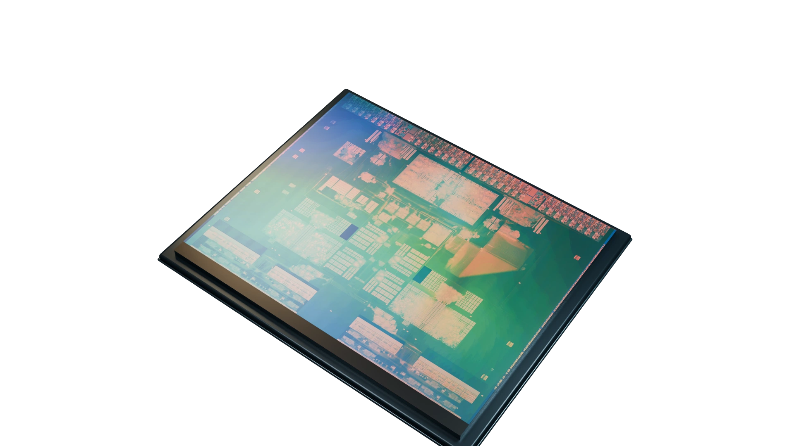

cBPF
MASTER’S THESIS
Hardware capabilities for eBPF
Presented by
Barna Ifkovics
Supervisor
dr.ir. A. Continella
Daily supervisor
Mattia Napoli
Morello SoC
Four CPU cores + memory system
Enable JavaScript to navigate the presentation.